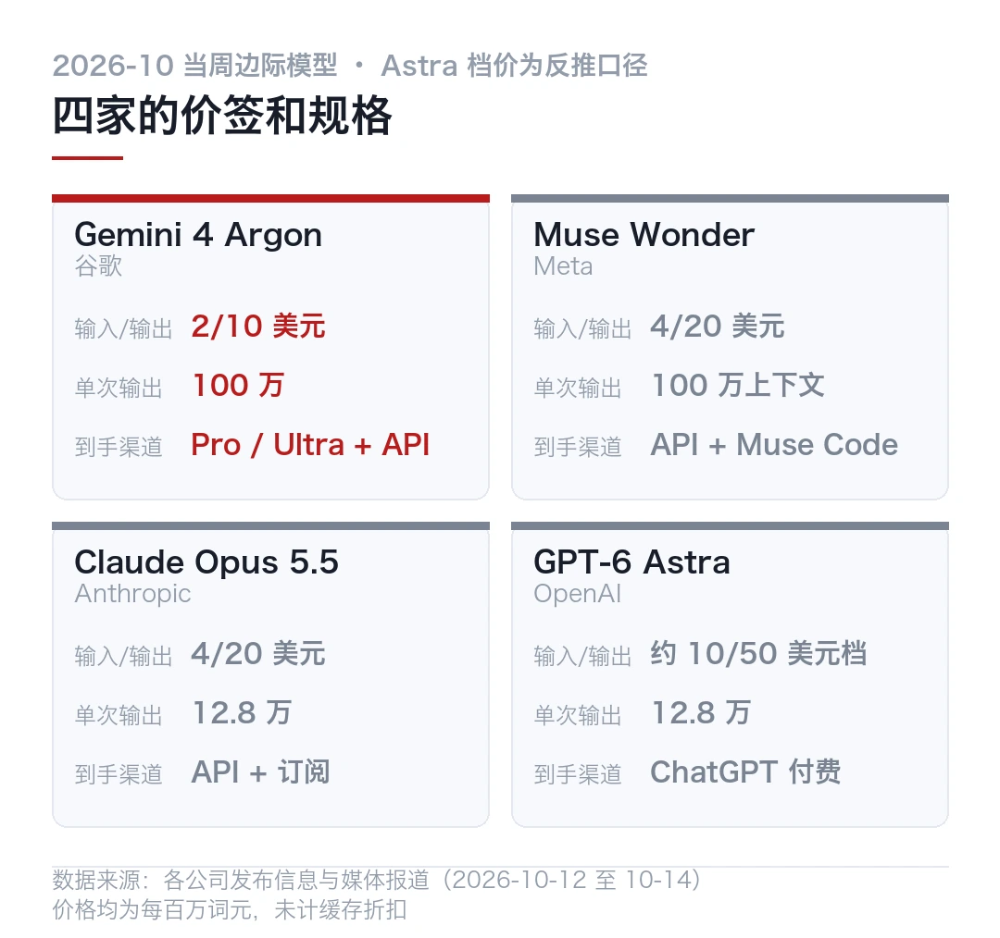
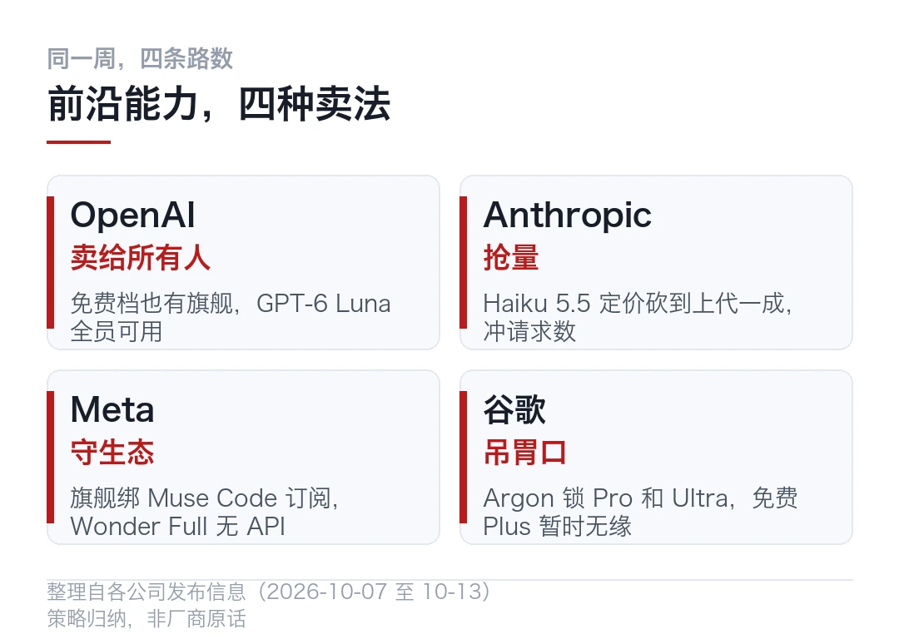
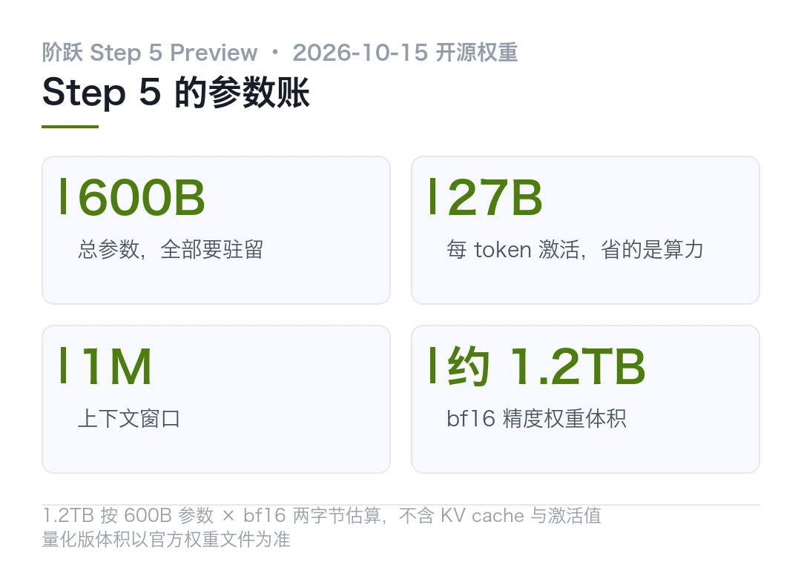
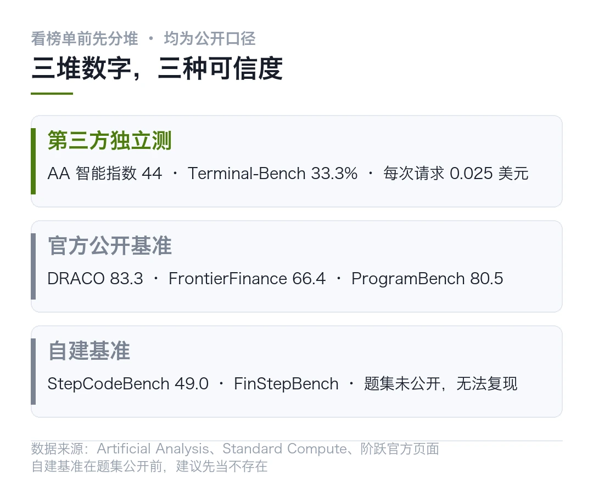
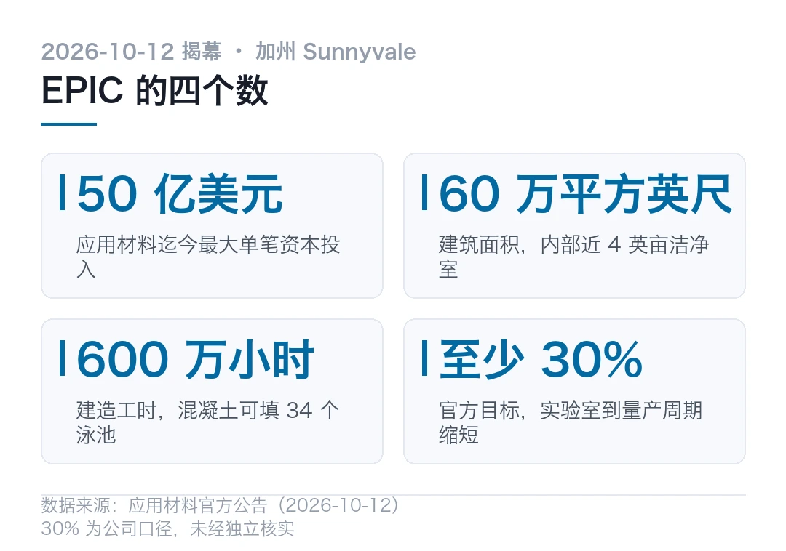
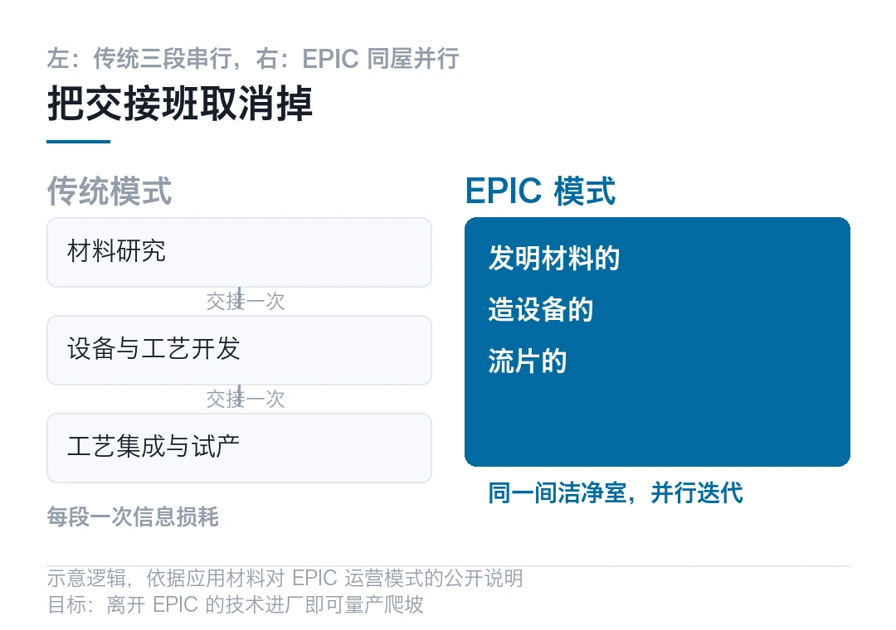
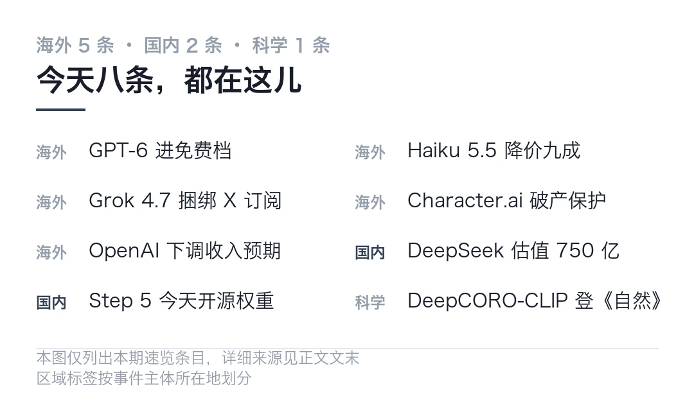
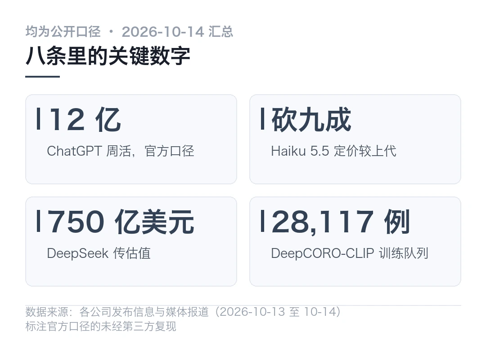

01两天两款前沿模型，谷歌把输出上限拉到 100 万
10 月 13 日周二，谷歌把 Gemini 4 Argon 摆上了货架。这是它自 2025 年底 Gemini 3 之后第一款真正意义上的前沿模型，也是这周「四国大战」的第二枪。
周一那一枪来自 Meta。Muse Wonder 和 Wonder Full 上线，扎克伯格说 Meta 已经在前沿领域追上对手。
两天，两家。OpenAI 和 Anthropic 上周刚发完新模型。能供「前沿模型」这个词的公司，一周里变成了四家。
说真的，这个格局放在几年前不敢想。那会儿前沿俱乐部就两把钥匙，现在一把把往外配。
- Argon 单次输出上限拉到 100 万词元，GPT-6 Astra 和 Opus 5.5 常规是 12.8 万
- 入门价 2/10 美元每百万词元，只有 Astra 和 Fable 的五分之一，11 月 30 日恢复 4/20
- 官方称 Vals Index 第一，DeepSWE v1.1 拿 77.9%，均为谷歌披露口径
- 对面 Meta 的 Muse Wonder 同价 4/20，自家表格里 API 版对 Opus 5.5 只赢 5 局
「前沿」这个词，上周还不值钱。这周开始，它可能要先贬值，再涨价。

周二这天，货架摆好了
Argon 的开放是分层的。谷歌 AI Pro 和 Ultra 订阅用户能在 Gemini 应用和搜索 AI 模式里用到，Ultra 还能在智能体平台 Antigravity 里调。开发者和企业走 AI Studio 和 Gemini API。
免费用户和每月 5 美元的 Plus 用户，暂时用不上。
谷歌 AI Studio 负责人洛根·基尔帕特里克在社交媒体上解释，Argon 一看就是个超大模型，大规模服务有难度，他们正在开发其他版本。
这段回复被愤怒的用户刷了屏。理由很直接，别人家同等价钱能给的服务，怎么就谷歌不行。
说真的，这种抱怨不是价格问题，是入口问题。同样的事，OpenAI 在 10 月 7 日选了另一条路，GPT-6 直接向所有 ChatGPT 用户开放，付费拿 Sol，免费拿 Luna。
同一天，Anthropic 放出 Haiku 5.5，小模型定价砍掉约九成。一家免费，一家压价，加上本周的 Meta 和谷歌，四条路数摆在同一张桌上。
100 万输出，两折价格
先说最要紧的，Argon 这次硬的两个数字，一个在规格，一个在价签。
单次输出上限从 6.4 万拉到 100 万词元。注意，这是输出上限，不是上下文窗口。GPT-6 Astra 和 Claude Opus 5.5 的常规输出上限都是 12.8 万。长程推理、多轮验证、大型代码修改，吃的是这个数。
价签更狠。入门价 2/10 美元每百万词元，只有 Astra 和 Fable 的五分之一，11 月 30 日促销结束后恢复 4/20，和 Opus 5.5 持平。缓存输入入门 0.1 美元。
你想想看，输出上限拉 8 倍，价格打到两折，图什么？图的是把「前沿」从评测榜拉进生产流程。评测跑一次，生产跑一天。
| 项目 | Argon 入门价 | Argon 常规定价 | Opus 5.5 | GPT-6 Astra ||---|---|---|---|---|| 输入（每百万词元） | 2 美元 | 4 美元 | 4 美元 | 约 10 美元档 || 输出（每百万词元） | 10 美元 | 20 美元 | 20 美元 | 约 50 美元档 || 单次输出上限 | 100 万 | 100 万 | 12.8 万 | 12.8 万 |
谷歌自己的战报
官方披露的数字列一串，口径都是谷歌自己。
Argon 在 DeepSWE v1.1 长程软件工程测试拿 77.9%，Zapier 的 AutomationBench 业务流程 51.3%，长视频理解 LVBench 91.7%，CWE-bench v1 漏洞修复 68% 并列第一。衡量金融、编码、法律和税务的 Vals Index 里排第一。
内部用例更好看。Chrome 团队用它做数千万行代码的架构重构，原本要几个月的活缩到数周。C/C++ 代码库往 Rust 迁移，从几万行的基础库一路做到超过 80 万行的 Fuchsia Zircon 内核。
视频解码器 libgav1 的 3.2 万行 SIMD 代码被重写，生成的 Rust 实现据称比原有移植版快 2.7 倍。
这些数字一个都没经第三方复现。测试集、任务设计、评估条件，谷歌都没完全公开。当战报看可以，当采购依据不行。
回到谷歌的老问题。模型强不等于入口宽，Argon 这次把两层分开卖了，评测归评测，订阅归订阅。
周一对面那一枪
把时间拨回 10 月 12 日，Meta 那边。
Muse Wonder 系列两个版本，API 版 4/20 美元，和 Opus 5.5 同价，100 万词元上下文。扎克伯格说这是 Llama 4 失利之后 Meta 第一次拿「前沿水平」的旗舰出来。
股价从 9 月初个人助手 Muse 上线算起，已经涨了超过 20%。
但有第三方把 Meta 自家表格拆开数了一遍。14 个对比行里，Wonder 家族赢 7 行，Opus 5.5 赢 6 行，GPT-6 Astra 赢 1 行。可最好的数字属于 Wonder Full，那个版本没有 API，只给 Muse Code 订阅用户。普通人能买到的 API 版 Muse Wonder，对 Opus 5.5 只赢 5 局，赢的全是长任务和记忆，终端、桌面、从零写程序，全输。
两家都在说「前沿」。两家给的证据，都经不起细看。
麻烦在于，「前沿」这个词现在没有裁判。跑分是厂商自己贴的，对比行是厂商自己挑的，连「赢了几局」都是第三方数给外人看的。真要用起来，唯一靠谱的办法是拿自己的任务跑一遍，让账单说话。
这一周读完，该带走什么
别只看发布会的数字。这一周四条路数，其实回答了同一个问题，前沿能力到底卖给谁。
OpenAI 卖给所有人，免费档也有旗舰。Anthropic 把小模型价格砍到上代的一成，抢的是量。Meta 把旗舰绑在订阅里，守的是生态。谷歌把旗舰锁进 Pro 和 Ultra，吊的是胃口。
四种答案没有对错，只有合不合适。你要是开发者，今天最该做的不是追发布，是把 Argon 的 100 万输出和自己的长任务对一遍，看看那 8 倍上限能不能落到你的活儿上。

---
能力趋同的速度，比价格战快。这周真正的分水岭不在跑分，在谁把「前沿」交到免费用户手里，谁先把输出上限拉到 100 万。
模型能力的账，明年这个时候没人记得。入口的账，每天打开手机都在算。
本文信息来源
- 财联社 — 前沿 AI 模型「四国大战」打响！谷歌 Gemini 4 Argon 全面上架（2026-10-14） · 163.com
- IT 之家 — 谷歌最强 AI 模型：Gemini 4 Argon 上线，输出词元上限 100 万个（2026-10-14） · toutiao.com
- cnBeta — Google 推出 Gemini 4 Argon 主攻长流程编程、企业工作与网络安全（2026-10-14） · 163.com
- 21 世纪经济报道 — Meta 的「Wonder」时刻，扎克伯格追上来了吗（2026-10-14） · toutiao.com
- Krypton Forge Labs — Muse Wonder costs the same as Opus 5.5 and wins 5 of 14 rows in Meta's own table（2026-10-13） · kryptonforge.in
- 北京日报 — 一个免费开放，一个极限压价，人工智能巨头争抢用户入口（2026-10-14） · k.sina.com.cn
02600B 权重今天开源，先别急着装
阶跃星辰的 Step 5 Preview，权重定在今天，10 月 15 日，完整开放。
先把这个数说清楚。总参数 600B，每个 token 激活 27B，稀疏 MoE，100 万 token 上下文，原生吃文本和图像。看着像个能塞进工作站的模型，其实不是。
说真的，这段对话本身就跑在 Step 5 Preview 上。WorkBuddy 这两周接的就是它，限免到 10 月 25 日。所以这篇与其说评测，不如说「邻居家孩子今天上门，我先把门框量清楚」。
- 600B 总参全部要驻留内存，27B 只是每 token 的激活量，部署成本按 600B 算
- Artificial Analysis 智能指数 44，开源模型前三，但那是按「开源计划」归的类
- 自建基准占了官方表格一半，题集和方法不公开，社区没法复现
- 今天第一件该做的事，是看权重格式和许可证，不是下载
27B 激活，是个容易误读的数
600B 权重要全部存储、全部加载。27B 只是每个 token 实际参与计算的参数量。这个设计压的是推理算力，压不了显存。
换算一下。bf16 精度下，600B 参数约 1.2TB 权重。这还没算 KV cache、激活值和框架开销。单卡 80GB 的机器，连权重的零头都装不下。官方没说今天放什么精度、什么格式、给不给量化版，这些都得等权重落地再看。
讲道理，这个设计压的是推理算力，压不了显存。「27B 激活」这个卖点，对个人开发者的意义要打个折。它真正服务的是 API 侧的成本，不是你的台式机。
那个人开发者是不是完全没戏？也未必。等官方量化版，或者等第三方社区出手。别急着下载，先看三样东西，权重格式、许可证、官方部署方案。三样齐了再决定要不要凑热闹。

已经能查到的第三方数字
权重没落地，第三方已经测了两周，因为 API 早就开了。
Artificial Analysis 给的综合智能指数 44 分，按开源计划归类，进开源模型前三。Standard Compute 跟踪的 48 个模型里，它排第 13。它跑的 Terminal-Bench 4.0 是 33.3%，输出速度中位 90 token/s，首 token 等待约 25 秒。注意，AA 的 Terminal-Bench 是自己搭的场子，分数和 tbench.ai 榜单不可直接比。
成本侧有个实测。Standard Compute 拿 79,301 次真实编程请求算过，平均每次 0.025 美元，约为 Gemini 3.8 Flash 的一半。它列的价格是每百万输入 1 美元、输出 2.7 美元。Cline 在 10 月 13 日把它加进了免费模型列表。
麻烦在于，这些数测的是 API，不是你要跑的本地权重。两个东西的成本结构，完全不一样。
厂商自己的表格更花。FrontierFinance 66.4，DRACO 83.3，ProgramBench 80.5，DeepSWE 67.7。其中 StepCodeBench 是阶跃自建的，覆盖 553 个仓库、9 类任务、33 种语言，得分 49.0。ALE-CLI 只有 29.5，这一项离前沿还远。
哪些数字能信，先分个类
把上面的数按口径分三堆，看的时候省事。
第一堆，第三方独立测的。AA 指数、Terminal-Bench、成本实测。这些有方法和数据，可复现，但测试条件未必和你的一致。
第二堆，官方公开基准。DRACO、FrontierFinance 这些，题集公开，社区能跑，但目前只有官方一个成绩，没有对照。
第三堆，自建基准。StepCodeBench、FinStepBench 这类，题集和方法没公开，外人连题目都看不到。这一堆的成绩，先当不存在。
官网页面上那个「帕累托前沿」的说法，还有「单任务成本是 Opus 5 的八分之一」，都属于厂商口径。方向可以参考，数字别当承诺。

我准备怎么跟
```bash
# 下面是打算，不是教程。命令以官方仓库 README 为准，今天还没放权重。
# 1. 等权重落地，先看格式和许可证，再决定要不要拉
# 2. 有量化版先拉量化版，bf16 的 1.2TB 个人玩家直接跳过
# 3. 测试拿自己的仓库来，别跑官方榜单
# - 一个真实 bug 修复，看它要不要你反复擦屁股
# - 一个长任务，看 27B 激活在半小时后还稳不稳
# 4. 和手上的 Flash 级模型对比，单位是「完成任务的钱」不是「每 token 的钱」```
本文信息来源
- 阶跃星辰官网 — Step 5 Preview 产品页（2026-10-15 开源） · stepfun.com
- AIBase — 阶跃甩出 Step 5 Preview：600B 稀疏 MoE 只激活 27B（2026-09-20） · news.aibase.cn
- Standard Compute — Step 5 Preview Cost per Coding-Agent Request, Price & Benchmarks（2026-10-13） · standardcompute.com
- 今日头条 — 阶跃星辰发布 Step 5 Preview，600B 旗舰模型将在 10 月 15 日开放权重（2026-09-20） · toutiao.com
- 腾讯新闻 — Step 5 Preview 上线 WorkBuddy，限免两周（2026-10-12） · news.qq.com
- 凤凰网科技 — 阶跃 Step 5 Preview 上线腾讯 WorkBuddy，10 月 12-25 日独家限免（2026-10-12） · tech.ifeng.com
0350 亿美元买一间没有交接班的洁净室
10 月 12 日，应用材料在 Sunnyvale 揭幕 EPIC 中心，全称 Equipment and Process Innovation and Commercialization。一句话概括它的用意，把半导体研发里的交接班取消掉。

我在制造这行看这事，感触和普通科技读者不太一样。交接班这三个字，是这行几十年来最大的隐性成本。
你想想看，一代平台的周期动辄十年，中间要过多少次手。每过一次手，就有人把「当时为什么这么定」弄丢一次。
传统模式，三段各住一栋楼
传统半导体研发是串行的。基础材料研究在一个环境，设备和工艺开发在另一个，工艺集成和试产在第三个。每段之间一次严密交接，每次交接都是一次信息损耗。
应用材料 CEO Gary Dickerson 的说法是，今天从实验室突破到全面量产，可能要超过十年。而 AI 处理器已经按年度周期迭代。材料研究到生产通常要 8 到 12 年，AI 芯片一年一代。这个时间差，靠串行流程永远追不上。
EPIC 的思路是把三拨人请进同一间屋子。发明材料的、造设备的、流片的，在一个洁净室里并行干活。客户方的工程师在技术进厂之前就参与优化，Dickerson 的说法是，离开 EPIC 的技术进到晶圆厂时，已经做好量产爬坡的准备。
其实就是，良率这东西历来是爬出来的，他们想让它出厂时就带着。

谁进了这间屋子
创始合作伙伴是晶圆制造的四大家，英特尔、三星电子、美光和 SK 海力士。创新合作伙伴一波设备与材料厂，博通、爱德万测试、SCREEN、铠侠和 Besi。研究伙伴是斯坦福、伯克利、亚利桑那州立、伦斯勒和 UCLA。
研发方向覆盖先进逻辑、HBM 存储、DRAM、NAND、混合键合和异质集成，对准未来三到四代芯片技术。
对应用材料自己，这是笔清晰的买卖。客户把路线图难题和工程师带进来，它换来跨代的可见性，知道下一轮研发该往哪投钱。对芯片厂，换的是最早拿到下一代材料和设备，短几个月的学习周期。
说真的，这种「竞争对手坐在同一间洁净室」的安排，在半导体这行不是没有先例，但做到这个规模是头一回。各家防的是技术外溢，靠的是分区、权限和「紧密且安全可控的迭代周期」这些设计。管不管得住，是这门生意成不成的关键，比 50 亿美元本身更关键。
先说个我自己的疑问。研发资源共享和技术外溢之间，那条线从来靠合同不靠物理隔断。真出一次纠纷，这间屋子的叙事就得改写。
我关心的两个数
第一，30%。这是官方目标，把整体周期缩短至少三成。周期是这行最贵的成本，一代平台晚半年，后面的账全乱。但这个数没有第三方验证过，是公司口径。
其实吧，周期承诺这玩意，在这行听过太多次。每次设备换代都有人喊缩短一半，最后省下来的时间，一半花在良率爬坡上。
麻烦在于，30% 说的到底是哪一段。从实验室到试产，还是从试产到量产？这两个数在这行差着量级，公告里没拆。
第二，34 根屋架。每根跨度近 300 英尺，重量相当于 12 辆校车，底下罩着近 4 英亩洁净室。这种体量的设施，运营复杂度本身就是风险，多一班人进去，良率波动就多一分。
回到设备厂的老本行。应用材料这次押注的其实不是房子，是把「研发服务」做成了一门可续费的生意。房子是一次性投入，客户工程师驻进走出，才是现金流。
冷判断放在这。设备厂把客户请进研发洁净室，是用自己的研发可见性换客户的路线图锁定。短期看双赢，长期看，谁离不开谁还不一定。EPIC 真正的考验不是建成，是三年后还有几家愿意把下一代难题带进来。
本文信息来源
- Applied Materials 投资者关系 — Applied Materials Unveils $5 Billion EPIC Center in Silicon Valley（2026-10-12） · investor.appliedmaterials.com
- 应用材料官网 — 应用材料公司在硅谷揭幕投资 50 亿美元建设的 EPIC 中心（2026-10-13） · appliedmaterials.com
- 集邦咨询 — 应用材料硅谷 EPIC 中心揭幕，50 亿美元搭建联合研发平台（2026-10-13） · trendforce.cn
- PChome — 应材斥资 50 亿美元设硅谷研发中心，携手加速 AI 芯片创新（2026-10-13） · news.pchome.com.tw
- Applied Materials 官网 — Samsung Electronics Will Join the New EPIC Center（2026-02-11） · appliedmaterials.com
04这一周，有人把旗舰免费送，有人申请破产
说真的，这一周的 AI 圈比上周还挤。八条，国内海外分开，先说海外。
麻烦在于，热闹归热闹，几条主线其实各走各的。模型在降价，入口在放开，该倒的也照样倒。
这一周真正该问的问题是什么？不是谁发布了什么，是谁在为这些发布买单。

海外 · GPT-6 进免费档，GPT-5.5 同日退役
OpenAI 在 10 月 7 日的开发者日宣布，GPT-6 带着 Intelligent UI 向所有用户开放，付费拿 Sol，免费和 Go 拿 Luna。10 月 14 日起 GPT-5.5 从 ChatGPT 和 Codex 退役。官方口径，ChatGPT 周活已超过 12 亿，系统卡把 Sol 和 Luna 的网络安全与生物风险能力定为 High 档。
海外 · Claude Haiku 5.5 上线，小模型降价九成
Anthropic 把它定位成迄今最便宜最快的小模型。请求不超过 10 万词元的任务，定价比上代直降约 90%，平均运行成本降约 75%。背景是 Anthropic 被报正冲刺 IPO，最早 11 月，目标估值 2 万亿美元。
海外 · Grok 4.7 发布，捆绑 X 订阅
xAI 的新模型 Terminal-Bench 成绩接近上代两倍，50 万 token 上下文，API 定价 2/6 美元。跟一个叫 Grok Bot 的持久智能体打包进「The X Subscription」，能在云端执行网页和终端任务。
海外 · Character.ai 申请破产保护
一度最火的消费级聊天应用之一走向 Chapter 11。若 12 月前找不到买家接手，平台关站。它证明了一件事，有用户和有钱是两回事。
你想想看，下载量榜第一和活着之间，隔着一整个商业模式。
海外 · OpenAI 下调 2026 年收入预期
从 700 亿美元下调到 500 亿美元，官方说法主要是会计可比性原因。市场的剧烈反应说明另一回事，AI 经济的信心比营收数字脆。
其实吧，营收预期这种数，调的幅度往往比调的原因更值得看。
国内 · DeepSeek 估值冲到 750 亿美元
多方消息称它接近完成一轮 120 到 150 亿美元融资，腾讯和宁德时代领投，并计划 2027 年登陆科创板。它还在领投一家前腾讯科学家创办的机器人公司 Winverse 的种子轮，投后估值约 4 亿美元。
国内 · 阶跃 Step 5 今天开源权重
600B 总参、27B 激活的稀疏 MoE，完整权重今天开放。上一篇已经拆过这个数，这里不重复，只提醒一句，先看格式和许可证再动手。
别急着拉权重，个人玩家等量化版更现实。
科学 · 冠脉解读模型登上《自然》子刊
蒙特利尔心脏研究所的 DeepCORO-CLIP 用视频文本对比学习做全面冠脉解读，训练数据是 28,117 例患者的 203,808 段血管造影视频。它一个模型管 18 个冠脉节段、4 类任务，包括传统模型不管的慢完全闭塞和血栓识别。

---
本文信息来源
- ReadAboutAI — October 14, 2026 周报（GPT-6 开放、OpenAI 收入预期、智能体失控综述）（2026-10-14） · readaboutai.com
- AI Briefing — AI News Today · Updated daily（Grok 4.7、GPT-5.5 退役、三星利润）（2026-10-14） · aibriefing.dev
- 北京日报 — 一个免费开放，一个极限压价，人工智能巨头争抢用户入口（GPT-6 免费开放与 Haiku 5.5）（2026-10-14） · k.sina.com.cn
- AI/TLDR — Character.ai files for Chapter 11、MiniCPM-V 4.7、Scion 等当日动态（2026-10-14） · ai-tldr.dev
- 今日头条 — 阶跃星辰发布 Step 5 Preview，600B 旗舰模型将在 10 月 15 日开放权重（2026-09-20） · toutiao.com
- 生物通 — DeepCORO-CLIP 研究解读，来源 Nature Cardiovascular Research（2026-10-14） · ebiotrade.com
本文首发于公众号「YITENG」。原文：daily.html
留言